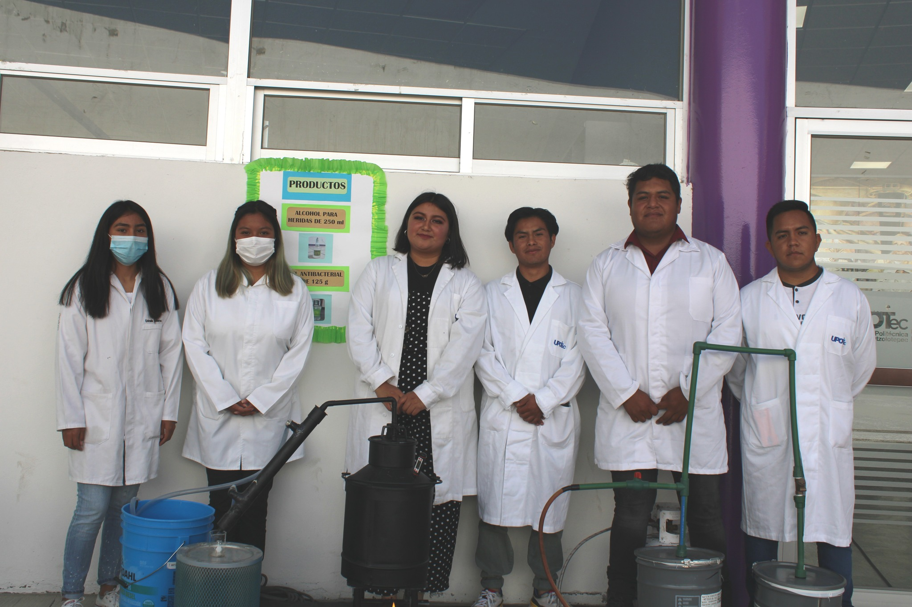

La Universidad Politécnica de Otzolotepec, se crea como un organismo público descentralizado del Poder Ejecutivo, con personalidad jurídica y patrimonio propios. Forma parte del Sistema de Educación Superior del Estado de México y adopta el modelo educativo del Subsistema Nacional de Universidades Politécnicas, con apego a las normas, políticas y lineamientos establecidos de común acuerdo entre las autoridades educativas estatal y federal.
La Universidad Politécnica de Otzolotepec, UPOTec-BIS, actualmente oferta las siguientes carreras, posgrados y diplomados:
Ingeniero Tecnologías de Manufactura bilingüe será una persona capaz de diseñar, implantar, automatizar procesos de manufactura, así como, administrar y evaluar proyectos en el ámbito de su competencia.
El licenciado en Administración y Gestión Empresarial será una persona bilingüe con capacidades gerenciales altamente competitivos que respondan a los desafíos a los que se enfrentan las organizaciones en ambientes de incertidumbre, dirigiendo eficazmente sus recursos y funciones, a través de una visión vanguardista para diseñar, evaluar y aplicar estrategias que permitan innovar o mejorar procesos en las organizaciones en un marco de sustentabilidad
El Ingeniero en Química bilingúe será una persona con alto sentido de responsabilidad integral, capaz de desempeñarse exitosamente aplicando la tecnología para formular y resolver problemas técnicos y administrativos, habilitándolos con un perfil emprendedor para el desarrollo de nuevas empresas.